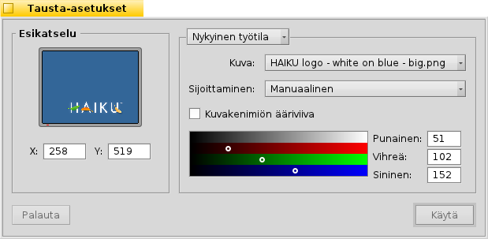

Suomi
Suomi Català
Català Deutsch
Deutsch English
English Español
Español Français
Français Italiano
Italiano Magyar
Magyar Polski
Polski Português
Português Português (Brazil)
Português (Brazil) Română
Română Slovenčina
Slovenčina Svenska
Svenska 中文 ［中文］
中文 ［中文］ Русский
Русский Українська
Українська 日本語
日本語 Tausta-asetukset
Tausta-asetukset
| Työpöytäpalkki: | ||
| Sijainti: | /boot/system/preferences/Backgrounds | |
| Asetukset: | ~/config/settings/system/app_server/workspaces ~/config/settings/Backgrounds settings - tallentaa paneeli-ikkunan sijainnin |
Voit asettaa värin tai kuvan taustaksi jokaiselle kansiolle ja työpöydän jokaiselle työtilalle.
Ylin valikko määrää, että koskeeko muutoksesi vain nykyistä työtilaa, kaikkia työtiloja, tiettyä kansiota tai oletuksena jokaista uutta kansiota.
Sen alla voit liittää kuvan tai valita jos haluat yksinkertaisesti värillisen taustan. Kuvat voidaan myös raahata ja pudottaa vasemmalla olevaan esikatseluun.
Jos käytät kuvaa, sinun on päätettävä sijoittelu:
| sallii sinun määritellä koordinaatit. Voit raahata kuvaa ympäriinsä vasemmalla olevalla esikatselualueella tai kirjoittaa X ja Y -koordinaatit käsin. | ||
| keskittää kuvan näytön keskelle. | ||
| laajentaa kuvaa ottamatta huomioon sen kuvasuhdetta kunnes se täyttää näytön. | ||
| täyttää näytön toistamalla kuvaa. |
n aktivoiminen laittaa ohuen ääriviivan kuvakkeen nimiöiden ympärille.
Se onko kuvakenimiön todellinen teksti musta vai valkoinen, riippuu väripoimijan asetuksista. Tumma väri asettaa tekstin valkoiseksi, vaalea väri mustaksi. Joten jos liität hyvin vaalean kuvan taustaksi, sinun olisi asetettava myös väripoimija vaaleaan väriin, jotta kuvakenimiö on luettava mustana. (Tai käytä yllä mainittua ääriviivavalitsinta.)
Valittu väri heijastuu myös Työtilat-sovelmaan, joka ohittaa kuvat taustana.
| tuo takaisin asetukset, jotka olivat aktiivisia, kun käynnistit Tausta-asetukset. | ||
| asettaa muutoksesi. |